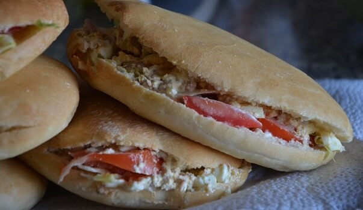

Bienvenue au Restaurant
Bichou Délices
Bichou Délices vous propose des plats nordistes, l'adresse incontournable pour savourer l'authenticité des recettes du Nord. Chaque plat est préparé avec soin pour offrir une expérience gourmande et inoubliable.
Voir le menuÀ propos de Bichou Délices
Chez Bichou, la cuisine est plus qu'un repas : c'est une histoire, un héritage et une émotion partagée.
Originaire du Nord, Bichou met à l'honneur les saveurs authentiques avec une touche de modernité pour plaire à tous les gourmets. Afin de préserver l'authenticité des recettes nordistes, nous utilisons uniquement des ingrédients frais, naturels et locaux.
Chez Bichou Délices, chaque client est invité à vivre une expérience culinaire unique faite de découvertes et de souvenirs. Avec son équipe et son service de livraison, Bichou vous offre un véritable voyage gustatif au cœur du Nord.
Nos Menus
-
Lundi

Toubani
Le Toubani est un plat traditionnel du Nord à base de farine d'haricots, préparé et cuit à la vapeur. Moelleux et généreux, il se savoure avec de l'huile, des oignons et du piment en poudre. Riche en protéines, fibres et vitamines, c'est un plat sain et nourrissant.
L'unité à 250fr -
Mardi

Couscous africain (Wassa Wassa)
Préparé à base de cossettes d'igname, ce couscous léger et savoureux est cuit à la vapeur. Il s'accompagne d'huile de palme, de friture, de poisson, d'œuf ou de fromage. Énergétique et appétissant, il se consomme aussi bien au petit-déjeuner qu'au déjeuner.
1000fr / 1500fr / 2000fr -
Mercredi

Atassi (Watché)
Mélange de riz et d'haricots cuits ensemble, l'Atassi est généralement servi avec friture, piment noir, œuf, fromage, poisson ou viande. Chez Bichou, il est également proposé avec du spaghetti ou du gari. C'est un plat équilibré, nourrissant et polyvalent.
1000fr / 1500fr / 2000fr -
Jeudi

Couscous africain
Un classique du Nord, toujours apprécié et savoureux.
1000fr / 1500fr / 2000fr -
Vendredi
Igname pilé
Préparé en pilant de l'igname bouilli jusqu'à obtenir une pâte lisse et élastique, l'igname pilé se déguste en boulettes accompagnées de sauces variées. Un incontournable du Nord.
3000fr -
Samedi
Couscous africain
Une spécialité toujours au rendez-vous pour clôturer la semaine.
1000fr / 1500fr / 2000fr
Nos Produits Disponibles
-
Wassa Wassa Précuit
Savourez le goût authentique du Wassa Wassa, déjà précuit prêt à préparer chez vous en quelques minutes.
-
Farine de bouillie de mil
De la farine de mil de qualité, idéale pour préparer une bouillie nutritive et délicieuse à la maison.
Mets Disponibles sur commande
Chez Bichou Délices, nous vous accompagnons lors de vos moments spéciaux. Pour vos cérémonies, baptêmes, réunions de famille, anniversaires ou tout autre événement, nous préparons avec soin une variété de mets savoureux, disponibles uniquement sur commande, qu'il s'agisse de plats traditionnels du Nord ou de recettes personnalisées selon vos envies.
Plats
-
Riz au gras
Un délicieux riz mijoté dans une sauce tomate parfumée aux oignons, épices et légumes, accompagné de viande ou poisson.
-

Pain + Sandwich
Du pain de qualité accompagné de sandwiches pour vos invités.
-

Riz créole
Riz nature aux grains légers et séparés, fait maison.
-
Riz blanc à la sauce tomate
Le riz cuit à la perfection pour rester moelleux et léger, accompagné d'une sauce tomate maison.
Desserts
-
Dèguè maison
Une douceur au mil et au yaourt, préparée avec soin.
-
Yaourt Spécial
Le yaourt unique de chez Bichou Délices.
Galerie
Découvrez en images nos plats et l'ambiance chaleureuse de Bichou Délices.
Atassi traditionnel
Couscous africain
 Atassi maison
Couscous du jeudi
Atassi maison
Couscous du jeudi
 Bouillie de mil
Riz créole
Bouillie de mil
Riz créole
Contact
Aïbatin, dans la von de la station Bénin Pétro
01 66 86 47 95 / 01 51 00 74 74

Ouvert du lundi au samedi, de 09h à 17h